BPM Platform
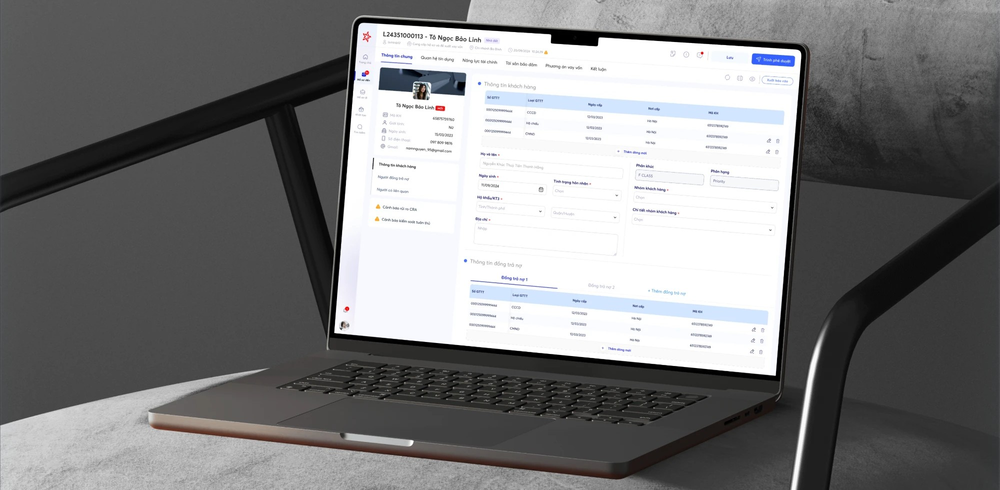
Biến quy trình xử lý hồ sơ vay nhiều tầng phê duyệt thành một hệ sinh thái rõ ràng — từ lúc RM tìm cơ hội bán trên app, đến khi hồ sơ được phê duyệt trên web.Turning a multi-layer loan approval process into one clear ecosystem — from the moment an RM spots a sales opportunity on mobile to the file being approved on the web.
01 — Bối cảnh01 — ContextMột hồ sơ, rất nhiều người chạm vàoOne file, many hands
Business Process Management (BPM/LOS) quản lý toàn bộ quy trình xử lý hồ sơ các sản phẩm của ngân hàng — Vay, Giải ngân, Thẻ… cùng các công cụ hỗ trợ như Tư vấn giá, Định giá tài sản bảo đảm, Kho TSBĐ và hệ thống Giám sát.
Hệ sinh thái gồm web BPM cho xử lý hồ sơ, app MB tín dụng cho RM ngoài hiện trường và mini app trong CRM. Mỗi hồ sơ đi qua nhiều vai trò: RM thu thập và đề xuất, Thẩm định đánh giá, Kiểm soát phê duyệt. Mình phụ trách trải nghiệm end-to-end: research, flow, wireframe, UI, prototype, user testing và bàn giao.
Business Process Management (BPM/LOS) manages processing workflows for the bank’s products — Loans, Disbursement, Cards… — plus support tools such as Price consulting, Collateral valuation, Collateral warehouse and Monitoring.
The ecosystem spans the BPM web app for file processing, the MB Credit mobile app for RMs in the field and a mini app inside CRM. Every file passes through several roles: RMs collect and propose, Appraisers assess, Controllers approve. I owned the end-to-end experience: research, flows, wireframes, UI, prototypes, user testing and handover.
02 — Vấn đề02 — ProblemKhó dùng, thiếu nhất quán, quá tải thông tinHard to use, inconsistent, overloaded
Từ stakeholder interview với BA và phản hồi trực tiếp của người dùng, mình tổng hợp 4 nhóm vấn đề chính trên phiên bản cũ.
From stakeholder interviews with the BA and direct user feedback, I grouped the old version’s issues into four themes.
Luồng thao tác khó sử dụngHard-to-follow flows
Nhiều bước nhập liệu rời rạc, người dùng khó biết mình đang ở đâu trong hồ sơ.
Fragmented input steps; users struggle to know where they are in a file.
Cá nhân hoá thấpLow personalisation
Phân quyền hiển thị chức năng chưa phù hợp với từng nhóm user.
Role-based visibility of features doesn’t fit each user group.
Thiếu nhất quánInconsistent UI
Màu sắc, nút bấm, trạng thái chưa được định nghĩa thống nhất.
Colours, buttons and states were never defined consistently.
Phân cấp thông tin mờUnclear hierarchy
Thông tin chính — phụ lẫn lộn, cản trở việc tiếp nhận và ra quyết định.
Primary and secondary information blur together, slowing decisions.
03 — Quy trình03 — ProcessTừ audit đến goliveFrom audit to go-live
Mình không vẽ lại ngay. Dự án bắt đầu bằng một đợt Audit BPM để có dữ liệu trước khi đề xuất thay đổi, sau đó đi qua brainstorm, user flow, wireframe rồi mới đến UI.
I didn’t jump into redrawing. The project started with an Audit of BPM to gather evidence, then moved through brainstorming, user flows and wireframes before any UI.
Discover
Stakeholder interview, audit, xác định nhóm user chính.Stakeholder interviews, audit, key user groups.
Brainstorm
Phác thảo tay bố cục, nội dung và các phương án.Hand sketches of layout, content and options.
Flow
User flow liên hệ thống: App MB, CRM, BPM, đối tác định giá.Cross-system flows: MB App, CRM, BPM, valuation partner.
Design
Wireframe, 2 phương án, UI trên Design System.Wireframes, two options, UI on the Design System.
Validate
UT với RM, Thẩm định, Kiểm soát; bàn giao và golive.Testing with RMs, Appraisers, Controllers; handover and go-live.
04 — Brainstorm04 — BrainstormBắt đầu bằng bút và giấyStarting with pen and paper
Trước khi mở Figma, mình phác thảo nhanh Homepage (banner, OKR, SLA, dashboard số hồ sơ) và màn Quản lý hồ sơ đến cùng BA để thống nhất nội dung.
- Danh sách hồ sơ sắp xếp theo thứ tự SLA gấp, để RM luôn xử lý việc quan trọng trước.
- Hồ sơ chia tab Thông tin chung / Phương án / Hồ sơ khách hàng / Upload; nội dung dạng check box và text được tách rõ.
- Ghi chú ràng buộc: 1 màn hình, hạn chế scroll; tải từng file hoặc tải tất cả; ô ý kiến / comment cố định ở cuối.
- Chốt hướng: đề xuất 2 phương án UX/UI — bố cục ngang và scroll dọc — để test với người dùng.
Before opening Figma, I sketched the Homepage (banner, OKR, SLA, file dashboard) and the Incoming files screen with the BA to agree on content.
- Files are sorted by SLA urgency, so RMs always handle the most pressing work first.
- A file is split into tabs — General / Plan / Customer documents / Upload — with check-box and free-text content clearly separated.
- Constraints noted: one screen, minimal scrolling; download single files or all; a fixed comment box at the bottom.
- Decision: propose two UX/UI options — horizontal layout vs vertical scroll — to test with users.
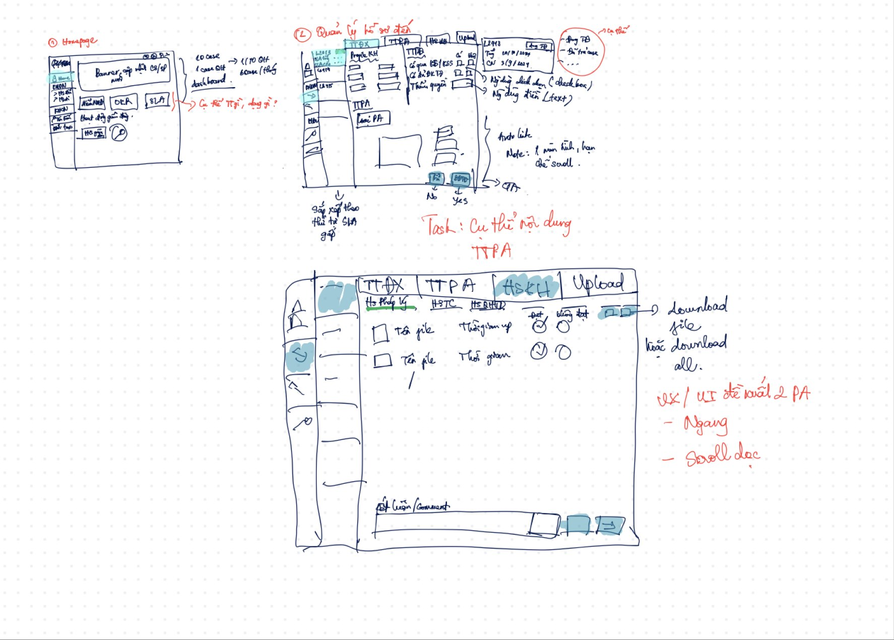
05 — User flow05 — User flowsMột hành trình, nhiều hệ thốngOne journey, many systems
Luồng tái cấp tín dụng
Flow theo swimlane giữa Mô hình chấm điểm, App MB / CRM, Mini app CRM, BPM và 3 vai trò RM, Khách hàng, đơn vị định giá:
- Mô hình lọc danh sách phương án đến hạn tái cấp trong 1 tháng và đánh giá kết quả (trong hạn mức thì luồng phê duyệt tự động, ngoài hạn mức thì qua chuyên gia).
- RM nhận kết quả: đủ điều kiện, không đủ điều kiện, khách hàng không đồng ý tái cấp.
- Khách hàng xác nhận thông tin, đóng phí và đặt lịch định giá sơ bộ; đơn vị định giá kiểm tra tài sản có thay đổi hay không.
- Trên Mini app CRM, RM chụp ảnh tài sản, cơ sở kinh doanh, bổ sung hồ sơ rồi xác nhận tái cấp → BPM tạo phương án, hệ thống phê duyệt tự động; nếu không thì dừng luồng.
Luồng Cơ hội bán tín dụng ↔ CRM
Từ CRM Homepage → Mini app → Cơ hội bán tín dụng (danh sách / tạo mới). Tạo mới yêu cầu nhập thông tin khách hàng, người liên quan và nhu cầu dự đoán. Trong chi tiết cơ hội, RM có đủ công cụ: gợi ý bán chéo (bảo hiểm, thẻ, tài khoản số đẹp), tra CIC, tư vấn tài sản, minh hoạ khoản vay, upload hồ sơ và tạo đề nghị vay vốn — rồi quay lại CRM.
Credit refinancing flow
A swimlane flow across the scoring model, MB App / CRM, CRM mini app, BPM and three roles — RM, customer, valuation partner:
- The model lists plans due for refinancing within a month and evaluates them (within limit → automatic approval; otherwise → expert approval).
- The RM receives results: eligible, not eligible, or customer declined.
- The customer confirms details, pays the fee and books a preliminary valuation; the valuation partner checks whether the collateral has changed.
- In the CRM mini app, the RM photographs the collateral and business, adds documents and confirms refinancing → BPM creates the plan and the system auto-approves; otherwise the flow stops.
Credit sales opportunity ↔ CRM flow
From the CRM homepage → mini app → Credit sales opportunities (list / create). Creating one captures customer info, related parties and predicted needs. Inside an opportunity, the RM has every tool at hand: cross-sell suggestions (insurance, cards, vanity account numbers), CIC credit check, collateral advice, loan illustration, document upload and creating a loan request — then back to CRM.
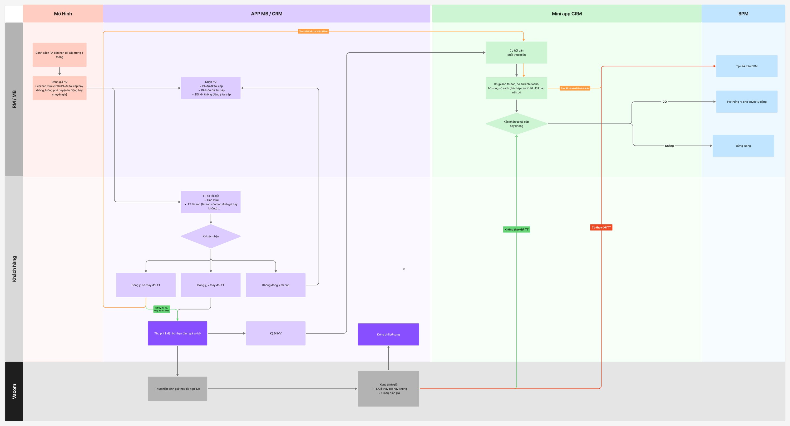
06 — Wireframe06 — WireframesTạo mới tín dụng & phi tín dụngCreating credit & non-credit opportunities
Wireframe cho app của RM được tách thành 2 luồng từ trang chủ: Tạo mới phi tín dụng (quét giấy tờ tuỳ thân, tạo lead) và Tạo mới tín dụng (danh sách lead theo phễu, chi tiết cơ hội với AI suggest, tư vấn giá trên bản đồ, kết quả định giá, cập nhật trạng thái, hồ sơ khách hàng).
Wireframe giữ ở mức grayscale để cả team tập trung vào luồng và nội dung trước khi bàn về UI.
Wireframes for the RM app split into two flows from the home screen: Create non-credit (scan ID, create a lead) and Create credit (lead funnel list, opportunity detail with AI suggestions, map-based price consulting, valuation result, status update, customer profile).
Wireframes stayed grayscale so the team focused on flow and content before discussing UI.
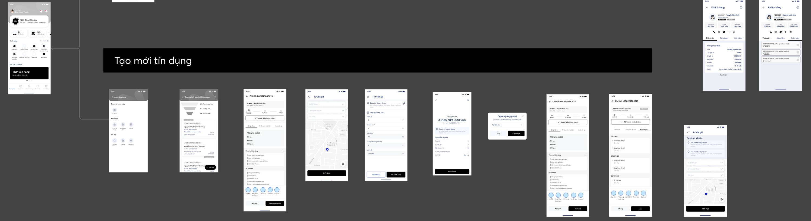
07 — Web BPM07 — BPM webMột hồ sơ, sáu tab, một bức tranh khách hàngOne file, six tabs, one customer picture
Luồng trọng tâm là Cung cấp hồ sơ & đề xuất vay vốn. Hồ sơ được chia thành 6 tab theo đúng tư duy thẩm định: Thông tin chung → Quan hệ tín dụng → Năng lực tài chính → Tài sản bảo đảm → Phương án vay vốn → Kết luận.
Panel hồ sơ khách hàng luôn cố định bên trái, kèm cảnh báo rủi ro CRA và cảnh báo kiểm soát tuân thủ, để người dùng không bao giờ mất ngữ cảnh khi chuyển tab. Hành động chính Lưu / Trình phê duyệt luôn ở cùng một vị trí.
The core flow is Submitting a file & loan proposal. A file is split into 6 tabs that mirror how appraisers think: General info → Credit relations → Financial capacity → Collateral → Loan plan → Conclusion.
A customer profile panel stays pinned on the left with CRA risk alerts and compliance alerts, so users never lose context when switching tabs. The primary actions Save / Submit for approval always live in the same place.
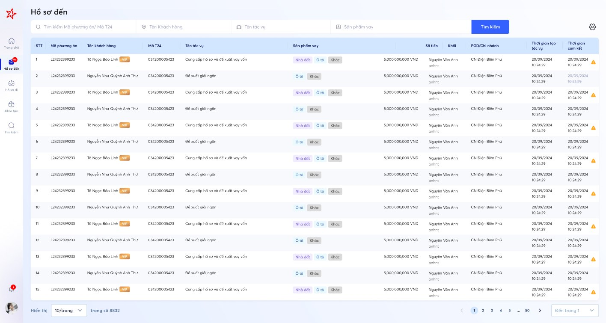
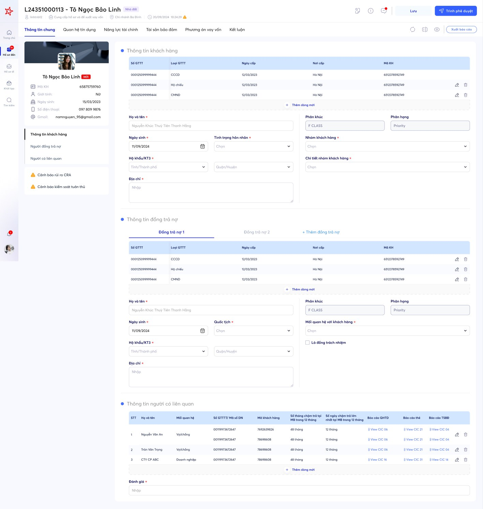
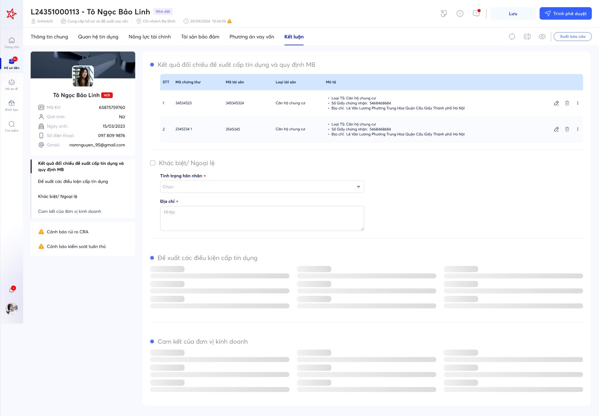
08 — Phương án08 — OptionsUpload là icon hay là tab?Upload as an icon or a tab?
Tài liệu đính kèm là điểm đau lớn nhất của RM. Mình thiết kế 2 phương án và đưa cả hai vào Usability Testing: OP1 — upload hồ sơ dạng icon mở panel bên phải; OP2 — upload hồ sơ là một tab riêng.
Cùng với đó là bộ công cụ cộng tác: xem chi tiết phương án ngay trên hồ sơ, comment theo từng khối thông tin và chọn TSBĐ từ kho có sẵn.
Attachments were the RMs’ biggest pain point. I designed two options and took both into usability testing: OP1 — upload via an icon that opens a side panel; OP2 — upload as its own tab.
Alongside came collaboration tools: viewing the loan plan in place, commenting on each information block, and picking collateral from the existing warehouse.
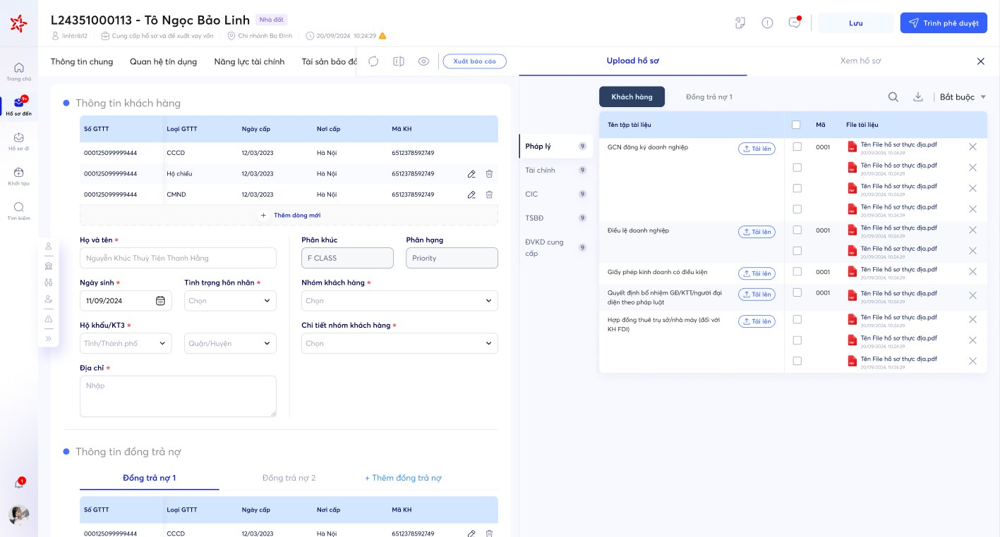
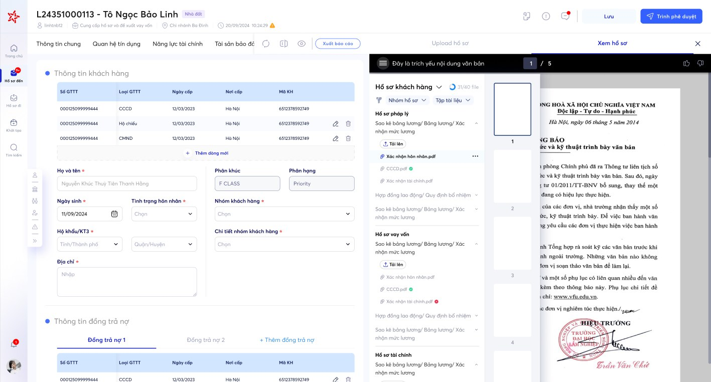
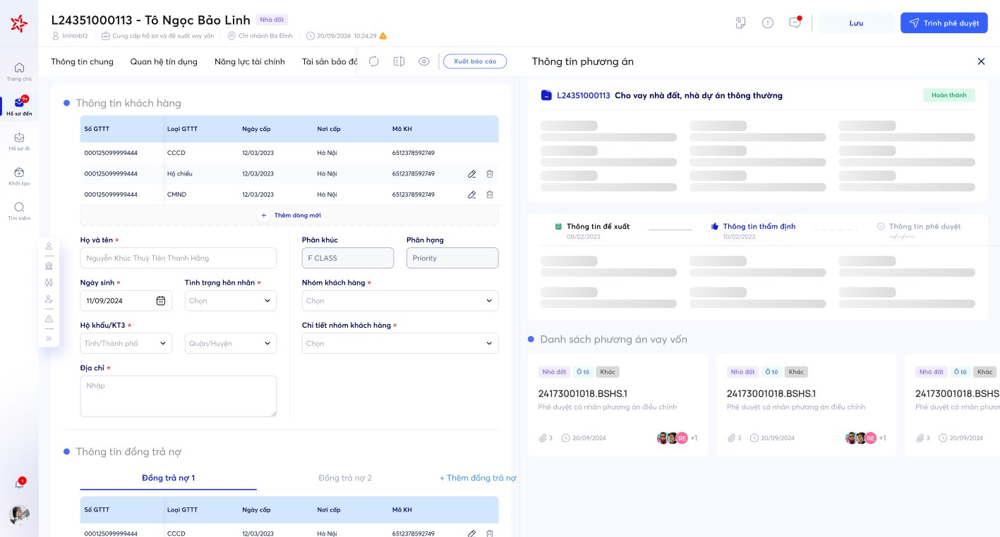
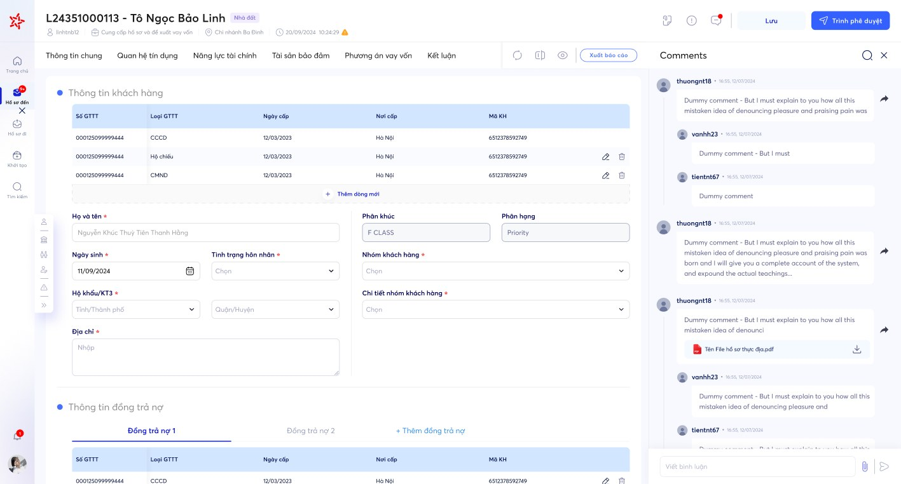
09 — App MB tín dụng09 — MB Credit appCơ hội bán tín dụng trong túi RMCredit sales opportunities in the RM’s pocket
Trên app, luồng Cơ hội bán tín dụng được tổ chức thành 4 nhóm màn hình: Điểm chạm (tạo mới, điểm tín dụng), Chi tiết cơ hội, Công cụ cho RM (CIC, tư vấn tài sản, lịch sử, upload hồ sơ, tái sử dụng hồ sơ, tạo đề nghị cấp tín dụng) và Kết quả (đang xử lý / đẩy bổ sung hồ sơ).
Với công cụ hỗ trợ tư vấn, mình đề xuất 3 phương án: OP1 — Minh hoạ khoản vay (form tính lịch trả nợ), OP2 — Trợ lý tín dụng dạng chatbot theo kịch bản cho phương án vay SXKD và xây/sửa/mua sắm, trả kết quả cho RM dạng PDF, và OP3 — Trợ lý tín dụng AI trò chuyện tự do.
In the app, the Credit sales opportunity flow is organised into four screen groups: Touchpoints (create, credit score), Opportunity detail, RM tools (CIC, collateral advice, history, document upload, document reuse, credit request) and Results (in progress / request more documents).
For the advisory tool I proposed three options: OP1 — Loan illustration (repayment schedule form), OP2 — Scripted credit assistant chatbot for business-loan and build/repair/purchase plans that returns a PDF to the RM, and OP3 — AI credit assistant with free-form conversation.
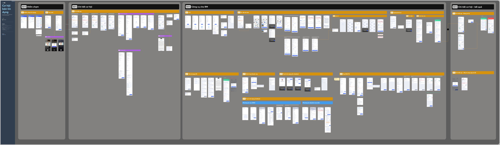
10 — Design System10 — Design SystemXây BPM Design System theo Atomic DesignBuilding the BPM Design System with Atomic Design
BPM Design System được xây từ dưới lên theo phương pháp Atomic Design: bắt đầu từ Design Tokens, ghép thành Atoms → Molecules → Organisms, đặt vào Templates và kiểm chứng trên Pages thật. Nhờ vậy, một thay đổi ở token (ví dụ màu brand) lan xuống toàn bộ component và màn hình mà không phải sửa tay.
Mọi ví dụ bên dưới lấy từ chính file BPM Design System; phần atom được dựng lại bằng code từ giá trị Figma Variables.
The BPM Design System was built bottom-up with Atomic Design: starting from Design Tokens, composed into Atoms → Molecules → Organisms, placed into Templates and proven on real Pages. A change at token level (say, the brand colour) flows through every component and screen with no manual edits.
Every example below comes from the BPM Design System file itself; atoms are rebuilt in code from the Figma Variables values.
Design Tokens
Màu, chữ, spacing, radius, shadowColour, type, spacing, radius, shadow
Atoms
Button, radio, checkbox, tag, inputButton, radio, checkbox, tag, input
Molecules
Nhóm field, dòng accordionField group, accordion row
Organisms
Header, sidebar, profile, checklistHeader, sidebar, profile, checklist
Templates
Bố cục màn hình hồ sơLoan-file screen layout
Pages
Màn hình thật với dữ liệuReal screen with real data
Design Tokens
Nền móng được khai báo bằng Figma Variables, chia thành các collection: Global (giá trị gốc), Alias (theo ngữ nghĩa: surface, text, icon, border, entry…), Component, Effect, Sizing, Typography — tổng cộng hơn 1.500 biến.The foundation is declared as Figma Variables, split into collections: Global (raw values), Alias (semantic: surface, text, icon, border, entry…), Component, Effect, Sizing and Typography — over 1,500 variables in total.
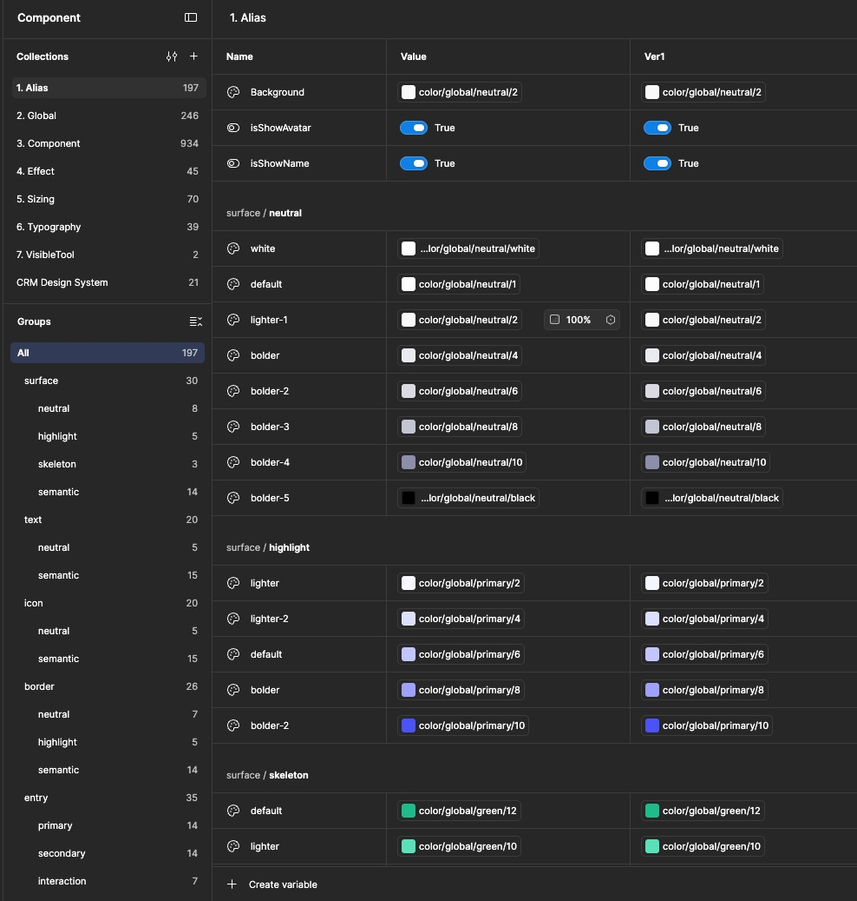
Atoms
Thành phần nhỏ nhất, không thể chia nhỏ hơn. Mỗi atom chỉ dùng token, không dùng giá trị cứng.The smallest pieces. Every atom uses tokens only — no hard-coded values.
Molecules
Ghép các atom thành một đơn vị có chức năng: một nhóm field, một dòng checklist.Atoms combined into a functional unit: a field group, a checklist row.
Organisms
Các khối giao diện hoàn chỉnh dùng lại trên nhiều màn hình: header hồ sơ, sidebar, thẻ khách hàng, checklist nhiều cấp.Complete interface blocks reused across screens: file header, sidebar, customer card, multi-level checklist.
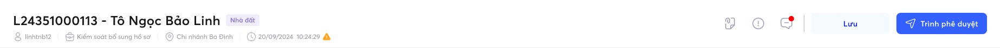
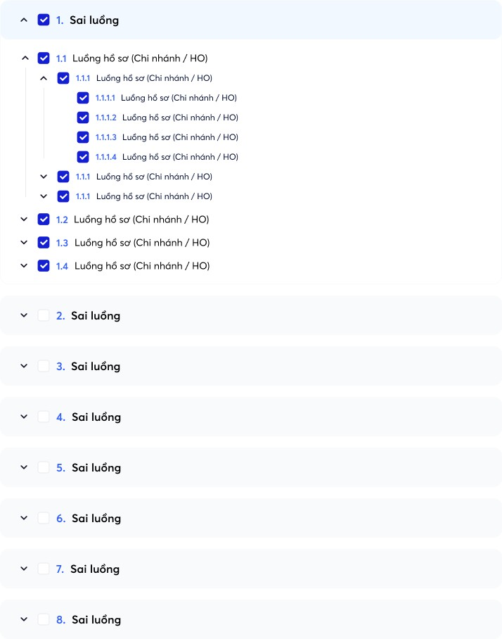
Templates
Bố cục chuẩn của một màn hình hồ sơ, đo đúng kích thước thật, chưa có dữ liệu.The standard layout of a loan-file screen, at real measurements, without data.
Pages
Template được đổ dữ liệu thật — nơi kiểm chứng toàn bộ hệ thống hoạt động cùng nhau.The template filled with real data — where the whole system is proven to work together.
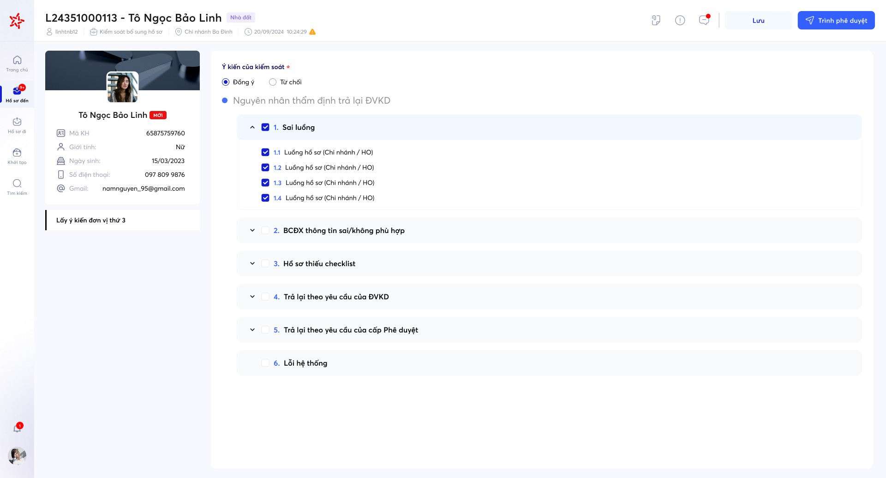
11 — Tài liệu & Grid11 — Docs & gridViết tài liệu cho từng componentDocumenting every component
Mỗi component có trang tài liệu riêng, ví dụ Accordion dùng cho checklist ý kiến kiểm soát (sai luồng, thiếu checklist, trả lại theo yêu cầu…), kèm ví dụ sử dụng thực tế ngay trên màn hình BPM, ngày cập nhật, người phụ trách và trạng thái.
Hệ thống Grid định nghĩa lưới 8 / 12 / 16 / 20 cột, thông số breakpoint (1920, 1440, 1280), layout anatomy (App bar, Navigation, Body) và side rail grid cho thanh điều hướng thu gọn / mở rộng.
Each component has its own doc page — for example the Accordion used for control-review checklists (wrong flow, missing checklist, returned on request…) — with a real in-product example, last-updated date, owner and status.
The Grid system defines 8 / 12 / 16 / 20-column grids, breakpoint specs (1920, 1440, 1280), layout anatomy (App bar, Navigation, Body) and side-rail grids for collapsed / expanded navigation.


12 — Bài học12 — LearningsThiết kế enterprise là thiết kế cho sự tin cậyEnterprise design is design for trust
- Audit trước, vẽ sau: dữ liệu từ người dùng thật giúp các đề xuất được stakeholder đồng thuận nhanh hơn.
- Vẽ flow xuyên hệ thống (App, CRM, BPM, đối tác) giúp lộ ra các điểm đứt gãy mà nhìn từng màn hình không thấy.
- Giữ ngữ cảnh quan trọng hơn giảm số click: panel khách hàng cố định giúp thẩm định viên tự tin hơn khi ra quyết định.
- Atomic Design giúp cả team nói chung một ngôn ngữ: designer, BA và dev đều biết một màn hình được ghép từ những khối nào.
- Design System là sản phẩm, không phải file Figma: cần tài liệu, owner và quy trình cập nhật.
- Audit first, draw later: evidence from real users gets stakeholders aligned faster.
- Mapping flows across systems (App, CRM, BPM, partners) exposes breaks you never see screen by screen.
- Keeping context matters more than saving clicks: a pinned customer panel makes appraisers more confident.
- Atomic Design gives the whole team one vocabulary: designers, BAs and developers all know which blocks a screen is built from.
- A Design System is a product, not a Figma file: it needs docs, an owner and an update process.